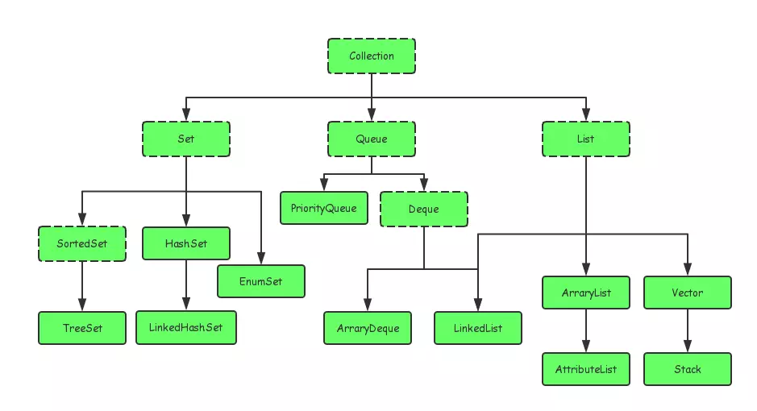
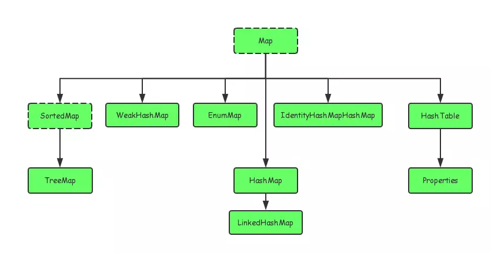

1、基本概念
1、JVM、JRE、以及 JDK（以 Windows 为例）
- 1、JVM 是 JAVA 虚拟机(java.exe)，是 JAVA 能够实现跨平台的关键部分；
- 2、JRE = JRE + rt.jar 基础类库；
- 3、JDK 是在 JRE 的基础上加上了一些程序开发所需要的程序及 Jar 包；如编译器（javac.exe）、开发工具（javadoc.exe、jar.exe、keytool.exe、jconsole.exe），Jar 包包括 dt.jar、tools.jar 等
其中 rt.jar 包为所有核心 Java 运行环境的已编译 class 文件的集合;tools.jar 是系统用来编译一个类的时候用到的，即执行 javac 所需要用到的；dt.jar 包是关于运行环境的类库，主要是 swing 包。
2、Java 语法
1、集合
1、接口
Java 的集合类主要由两个接口派生而出：Collection和Map。
- Collection

- Map

2、工具类
集合框架中的工具类，Collections与Arrays，这两个工具类中的方法都是静态的。
- Collections
用于操作集合。 - Arrays
用于操作数组。
3、HashMap 与 HashTable
- HashMap
HashMap 的一些知识在面试中几乎是不可避免的考点，其中涉及到的知识点包括扩容机制（resize），底层实现等等。
HashMap 允许键值对都为 null,并且是非线程安全的。
在 JDK1.8 之前，HashMap 底层实现是数组+链表，在 JDK1.8 时，在原来基础上，变成了数组+（链表/红黑树）的存储方式，进一步提高性能；提高性能的原因是红黑树是平衡二叉树，在查找性能方面比链表高；链表变为红黑树的时机是当链表个数达到 8 的时候就将用链表存储改为红黑树存储；
HashMap 有两个参数会影响其的扩容机制，一是初始容量，二是装载因子；当在 add 元素后，会判断 map 中元素数量超过 容量*装载因子时，map 就会执行扩容（resize）操作，还有一个操作比较耗时，当链表转变为红黑树时，会判断此时数组的容量，如果数组容量小于 64，不会进行链表转红色的操作，还是执行扩容操作。扩容比较耗时，日常开发中应该避免此操作，在 map 初始化时应该给与一个比较合适的初始容量，避免扩容；
扩容是申请一个容量为原数组两倍的新数组，然后将数组元素进行复制。在 jdk1.7 及其之前需要对元素重新进行 hash，在 jdk1.8 时
HashTable
HashTable 不允许值为 null，如果置入 null，会报空指针异常；